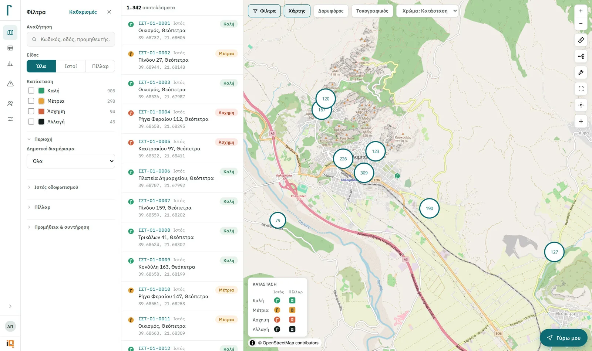
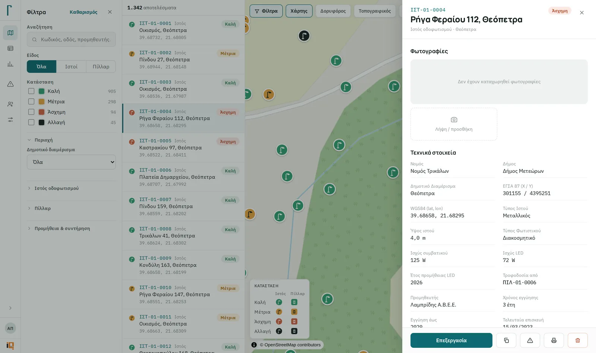
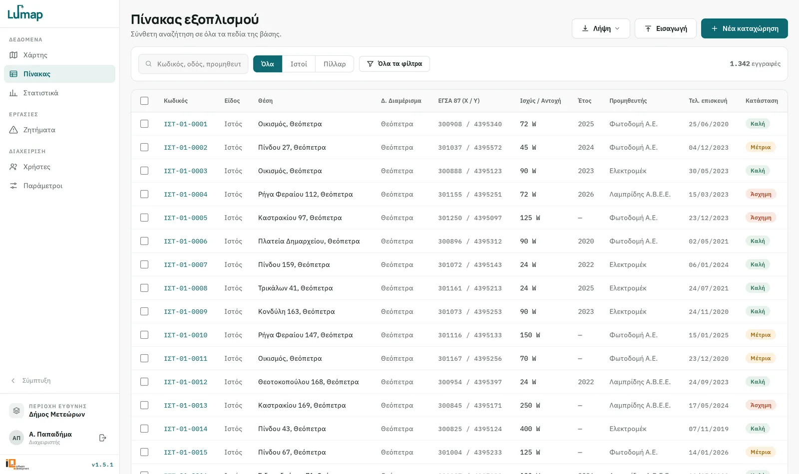
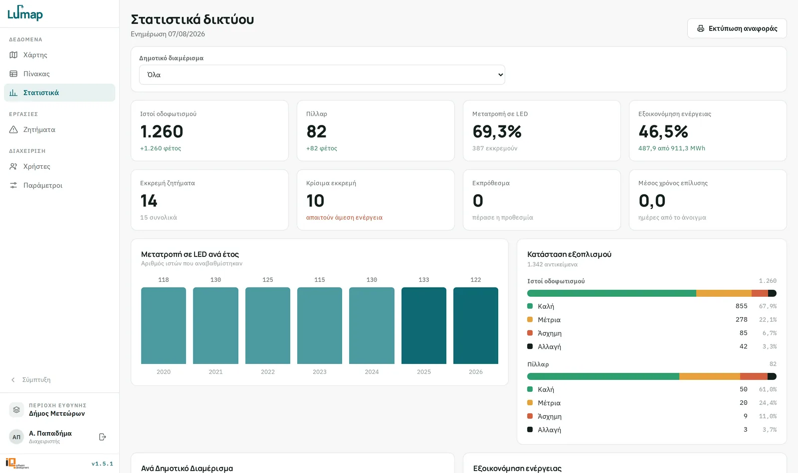
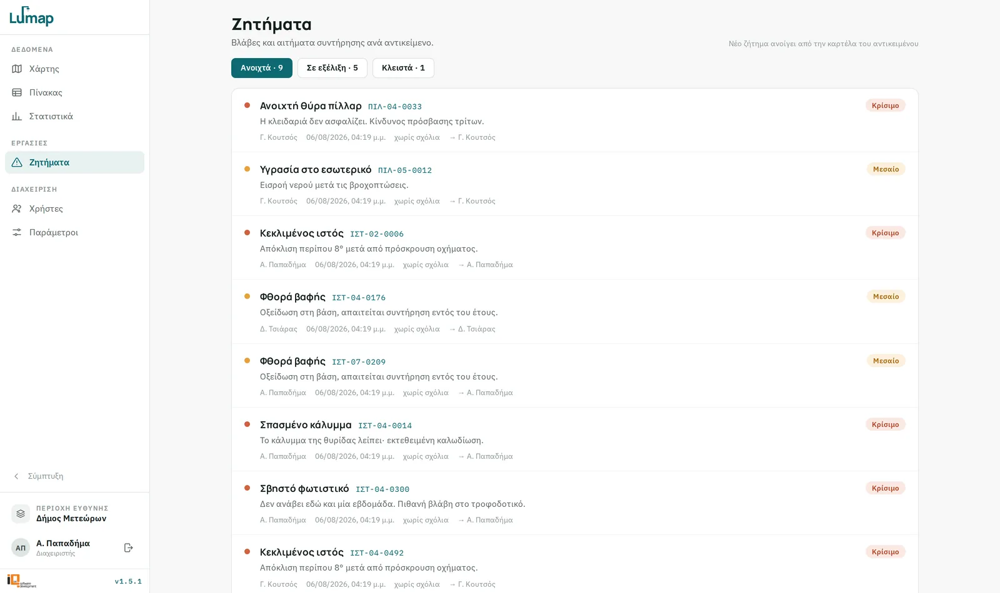
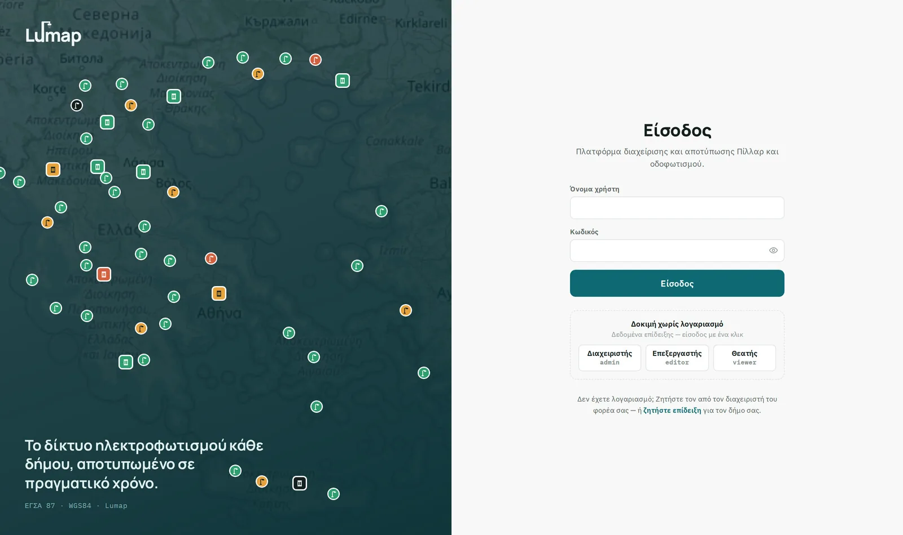
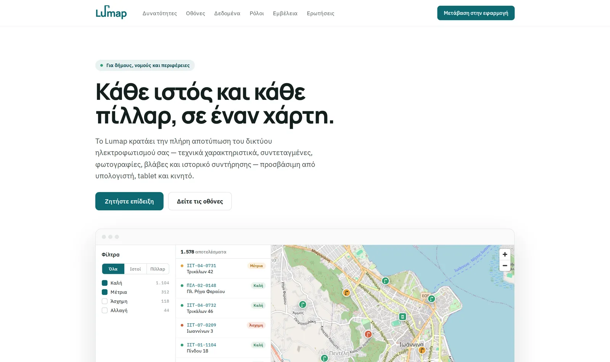

Map and table, one dataset
MapLibre GL with clustering, satellite / topographic basemaps and colour-by-status, wired to the same filters as the spreadsheet-style table.
A GIS platform that puts a municipality's entire street-lighting network — every lamp post and every distribution pillar — on one map, in one PostGIS database, reachable from a laptop in the office or a phone in the field.
Με λίγα λόγια
Όλο το δίκτυο φωτισμού ενός δήμου σε έναν χάρτη: κάθε φωτιστικό και κάθε πίλαρ, με τα τεχνικά του στοιχεία, το ιστορικό βλαβών και τις ανοιχτές εργασίες.
Ο δήμος σταματά να ψάχνει σε excel και shapefiles — βλέπει πού είναι η βλάβη και ποιος την έχει αναλάβει. Χτισμένο πάνω σε προδιαγραφές δημόσιου διαγωνισμού.

Municipalities in Greece typically know their lighting network as a pile of shapefiles, a spreadsheet and the memory of whoever has been doing the maintenance longest. Lumap replaces that with a live database: 1,300+ lamp posts and pillars for a single municipality, each carrying its technical specs, coordinates, photos, warranty, supplier, repair history and open faults.
It is built for a public-tender specification, so the boring parts matter as much as the map — graded roles, per-area scoping, audit trails, printable reports and a data model that survives an inspection.
A shapefile cannot do concurrent multi-user writes, caps field names at 10 characters and text at 254, has no date type, no transactions, no photos, no history and no relations. Lumap keeps a single PostgreSQL/PostGIS database and treats shapefile as an exchange format — one-click export, plus a companion file mapping the truncated DBF column names back to their full Greek labels.
Geometry is stored once, in WGS84. The Greek Grid (ΕΓΣΑ 87 / EPSG:2100) is derived on read and on write, so the two pairs can never drift apart. The form accepts input in either system and fills in the other.
MapLibre GL with clustering, satellite / topographic basemaps and colour-by-status, wired to the same filters as the spreadsheet-style table.
Stored once in WGS84, projected to the Greek Grid on the fly. Enter either pair in the form and the other one fills itself.
Nominatim reverse geocoding suggests a street address after a GPS fix or a map click — cached on an 11 m grid, never silently overwriting what a human typed.
Every action is its own flag, scoped to a state / region / prefecture / municipality / district hierarchy — an admin composes any combination without a code change.
Bulk import from spreadsheets with row-level validation; export to Excel, CSV or shapefile with a field-mapping key for the truncated DBF names.
LED conversion rate, energy saving, asset condition and open faults per district — printable as a report. A superadmin-only analytics screen tracks how the platform itself is used.
Screenshots come from the demo deployment. Asset codes, addresses, fault reports and the user names shown in them are seeded demo records, not live municipal data.
 Map — filters, result list, clusters by condition
Map — filters, result list, clusters by condition

Asset card — specs, coordinates, warranty, photos
Table — full-field search, bulk actions, import / export
Statistics — LED conversion & energy saving
Issues — faults per asset, by severity
Sign-in — one-click demo roles
Public landing pageΔύο γραμμές για το τι χρειάζεστε — απαντώ εντός 24 ωρών με τα επόμενα βήματα, χωρίς καμία δέσμευση.
Next project
QR-based photo collection for weddings and parties — no app, no account.
{kind=link}
{kind=link}
{kind=link}
{kind=link}
{kind=link}
{kind=link}